Introduction
LuaEclipse is a collection of plugins for the Eclipse platform. It's goal is to facilitate the development of programs using Lua, either as a standalone language or as an extension language.
The plugins are extensible and can be used as base for other tools, but this section is a manual on using the software, not extending it.
LuaEclipse is a free software and uses the same license as Lua 5.1.
Installation
The installation proccess is very simple, but needs some pre-requisites. The first one is that the user must have already installed the 3.2.* or later version of the Eclipse platform. Eclipse can be downloaded at www.eclipse.org. As a consequence, it is necessary that Java SDK is installed to run Eclipse.
It is possible to install LuaEclipse with the minimal installation of Eclipse (Eclipse Platform Binaries), but we recommend a more complete distribution, such as C/C++ Development Tooling (CDT).
There are two ways to install LuaEclipse.
- Eclipse Software Updates
- On the top menu, go to option Help->Find and Install, choose option "Search for new features to install" and click on "Next".
- If this is the first time you are installing LuaEclipse from its update-site, click on "Add Remote Site".
You can name the LuaEclipse Update-site anything you want, but in field URL you must type http://luaeclipse.luaforge.net/update-site/site.xml. - Make sure the LuaEclipse Update-site is checked, then click on "Finish".

- In the next screen, select the features to install. If you want to use the new LuaProfiler integration, select the appropriate feature.

- By manual download:
- Download the latest version of LuaEclipse at LuaForge. To install Eclipse, just decompress the zip file in the root folder of Eclipse, for example: "/usr/local/eclipse". After that start Eclipse and the installation is complete.
- In some systems it's necessary to start eclipse with the "-clean" command line argument.
- To check if the installation was correct, go to the menu option Help->About Eclipse Platform and select
the Plug-ins Details option and check if LuaEclipse is installed correctly. Your window must look like the picture bellow:
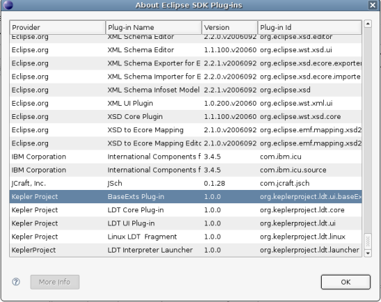
First Lua Project
To create a new Lua Project, click on menu option File->New->New Lua Project.

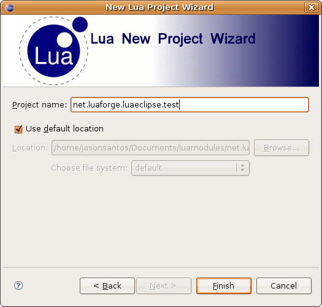
To include a new Lua script, select the Lua project wanted, then click with the right button and select the option Lua Actions->New Lua File

Now just start coding. ;)
Preferences and interpreters
Lua scripts need an interpreter or a host program in order to be able to run. Now the only preference option on LuaEclipse is the configuration of Lua interpreters to execute scripts. To set a interpreter go to Windows->preferences... and then the Lua->Installed Interpreters category, as in the following picture.
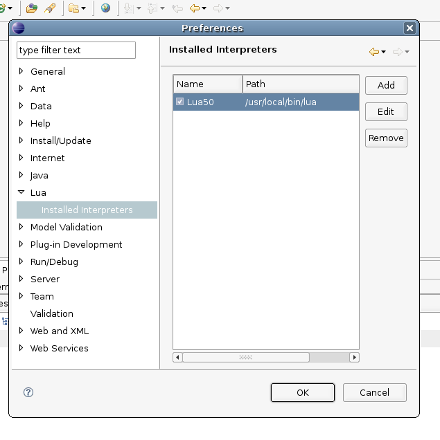
In this window it is possible to add, edit or remove an interpreter LuaEclipse will use to execute lua scripts. The configuration of an interpreter is basically the name that identifies it and the path to its Lua executable. On the first column of the interpreter list, there is an option to select one of them as the default interpreter to execute scripts. This option is used on the script execution configuration. After the necessary configurations are made, click on "Ok" to save them.
You must configure your host application binary as an interpreter if your project uses Lua as an extension language; otherwise, you might not be able to run your lua scripts properly.
Running a Lua file
LuaEclipse uses the Eclipse Platform Lauchers to run Lua scripts.
There are two ways of executing a lua script file: you can either create a run configuration for your script or you can use the Eclipse context menu on the script file, selecting Run As -> Lua application.

To create a Run configuration, select the menu option
Run->Run...
Create a new "Lua Standalone Application" launch configuration .
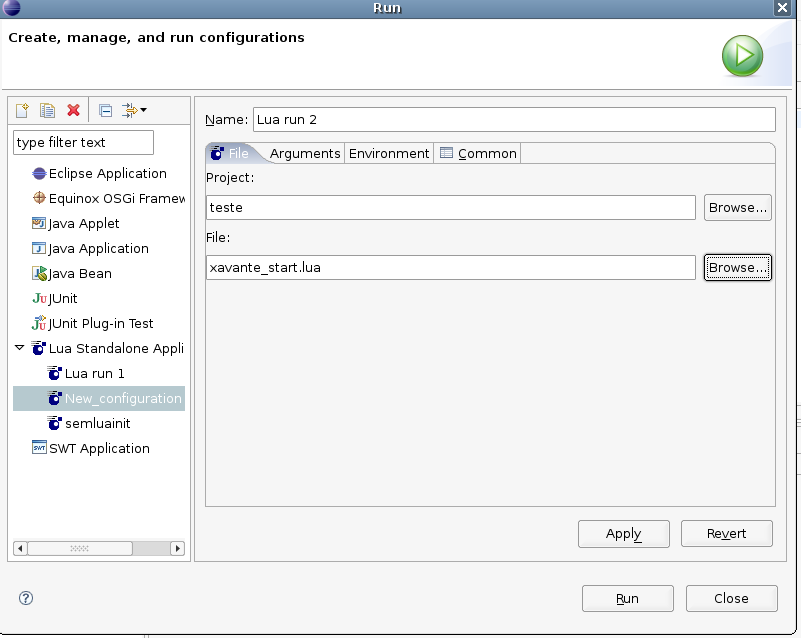
On the File Tab: select the Lua project and file to be executed.
On the Arguments Tab: configure the working directory, interpreter arguments and program arguments.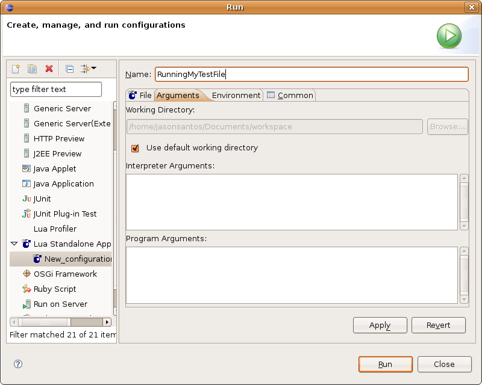
At Environment Tab: select or add a Lua interpreter that will run th script. At Variables field, add th environment variables needed for your script.
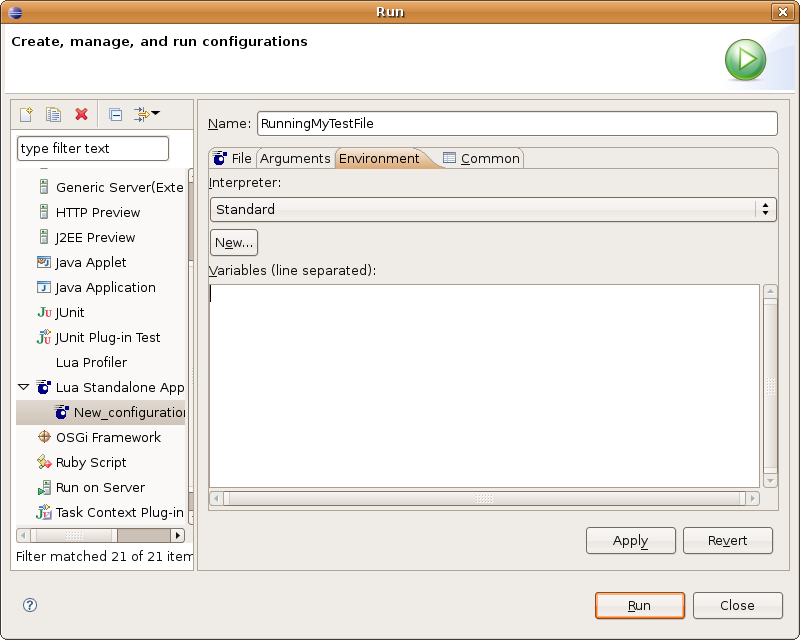
Press Run and view the script output at the "Console View".
LuaProfiler Integration
LuaEclipse introduced in version 1.2 a new Lua Profiler perspective. It makes possible for the user to run a lua script using the LuaProfiler module, while seeing the results in a special View
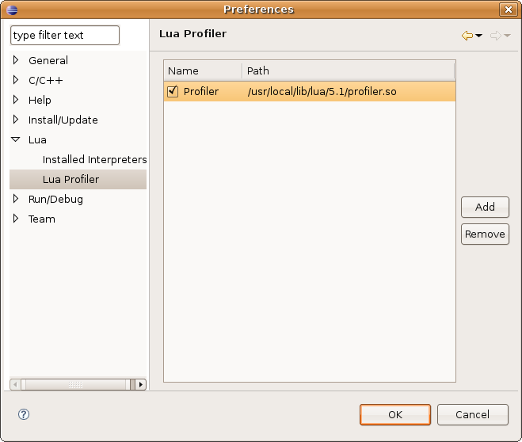
Since one can make use of several runtime binaries, it is necessary to select a profiler engine to use.

This profiler engine will be identified by a name, and can be reused in many projects.
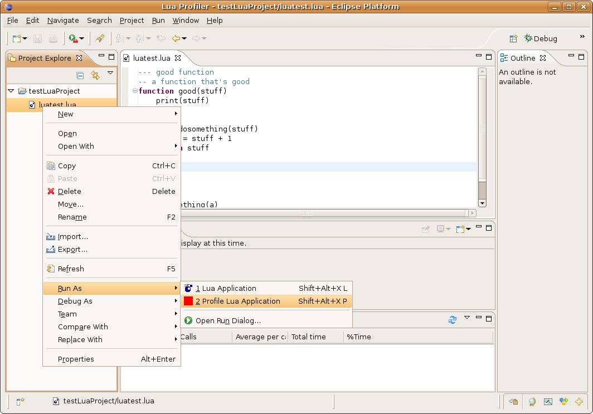
Once the profiler is selected, any executable script can be profiled. There is no need to require or to start the profiler within the program - the plug-in will automatically work on any valid Lua script

Results of the profiling execution can be seen in a special View, separated in columns. The first column will show all functions used in the execution; the second column will show the amount of times each function was called; A third column shows the average time spent inside the function, divided by the amount of calls; the last two columns are the total time spent inside each function and the percent of the total execution that these times represent.
LuaDoc Integration
Version 1.2 introduced also basic integration with the LuaDoc module.
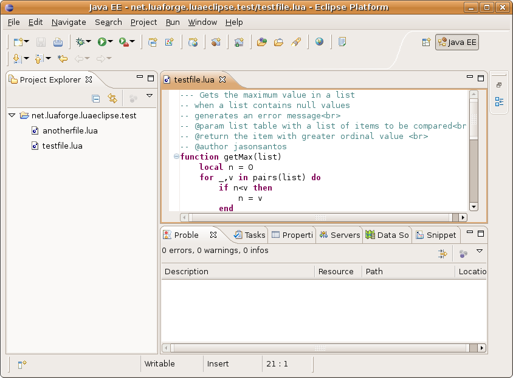
It makes possible for the user to write LuaDoc-style documentation on his code and make their HTML results available in mouse hover.
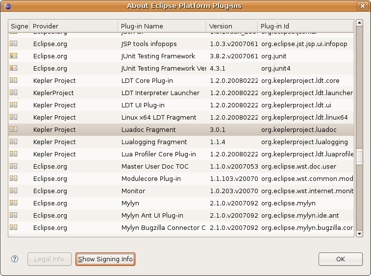
The plugin uses LuaDoc itself for processing documentation; the module is now included in the standard bundle of LuaEclipse, so users do not need to install it before using this feature.

Documentation is processed every time a file is saved in the project, and documentation present in project is persisted and available after the project is closed and reopen.
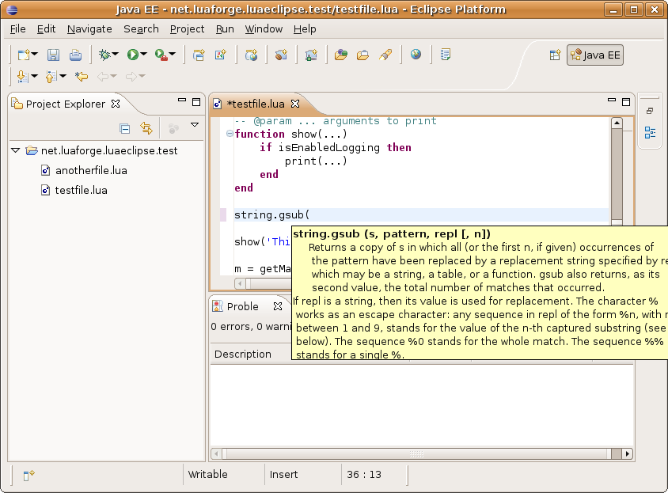
Aditionally, Lua 5.1 reference was included as a bonus documentation - so the user now can hover standard library functions for their official documentation.